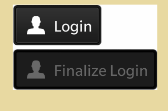
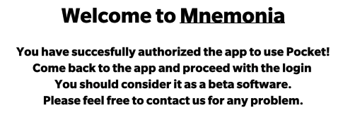
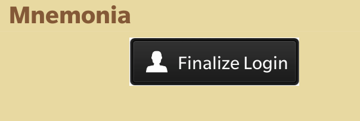
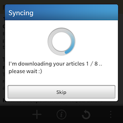

Welcome to Mnemonia!
Why Mnemonia
I've started writing Mnemonia as a way to learn Blackberry 10 Platform with a complex app.
Pocket was one of my favourite app on my android's phone; when I switched to Z10, there wasn't nothing like that in the market.
I'm improving Mnemonia in my spare time and for now, it is just fun, no money.
It requires a lot of effort and time to improve it..that's why all your feedbacks (EMAILME) are appreciated.
Index
Login
Login is a 3 step process in Mnemonia.
1. The first time you launch mnemonia you see a screen like this:

When you press the Login Button, Mnemonia opens a new browser window directed to Pocket's page asking for access to your Pocket account, in order to operate on it.
2. You should login in the new browser window and authorize the app.
If everything is ok you should see a confirmation message:

3. After these steps, you have to close the browser window and come back to Mnemonia.
Press Finalize Login and you should see a message asking to Sync:

Back To Index
Offline Mode
Offline Mode exist.. but it is not perfect.
Everytime you press the Sync Button, the app does 2 things:
- Sync with Pocket and download the list of articles
- Try to download the articles in your list and generate an offline version of every article
When you sync and you see this message:

Mnemonia have just passed step one, and it tries to accomplish step 2.
Unfortunately the second step, offline mode, it is just a beta... a really beta feature: made by me.
So I have done my best to create something usable.. but make an offline version of a web article is a complex task.
Since my app, it is free, I don't have money to use an online service that made this for me, like:
LINK
I'm sorry for this :)
If you press Skip while sync, Mnemonia stop the second step.
To access to the Offline version of an article, open it and press the down arrow  under the article.
Back To Index
under the article.
Back To Index
Actions: Archive,Favourite,Delete ...
If you long-press on an item in your list, you have access to a list of actions on the selected article:
- share it: bbm, facebook, twitter
- open it in a external browser
- put on favourite list on pocket
- delete it
- archive it
These actions are also available when you view an article.
Back To Index
Add an Article to Pocket
You have 2 way to do it:
- Manually: press the ADD button on the main screen and paste on the new window the link
- Sharing: from the browser or any compatible app, you can send a link to mnemonia through Share button
Back To Index
Q10 Keyboard Support
While you are reading an article you can press on the keyboad:
- A to Archive/Check
- D to Delete
- F to put in your Favourite List
- C to Copy the Article's Link
This is valid for Q10 and all the future BlackBerry phones with keyboard.
Any Question? Bug Report?
Tell Me how you use Mnemonia,which feature you would like to see and if you find any Bug while you are using Mnemonia, write me an email to crazycoder1999@gmail.com
Back To Index